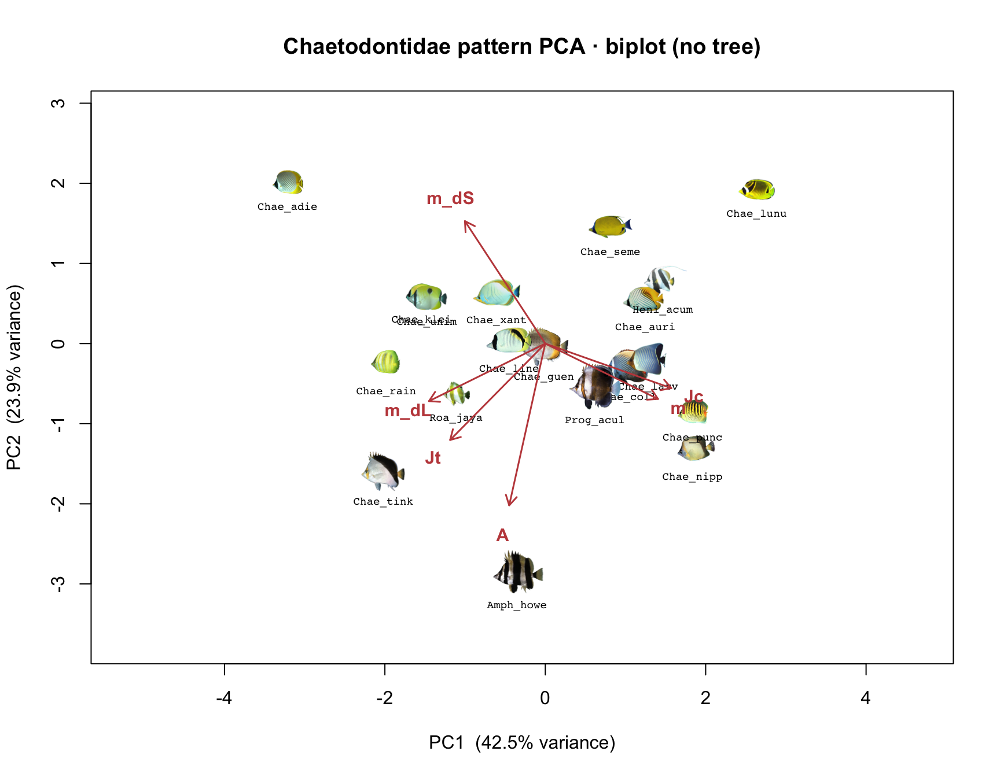
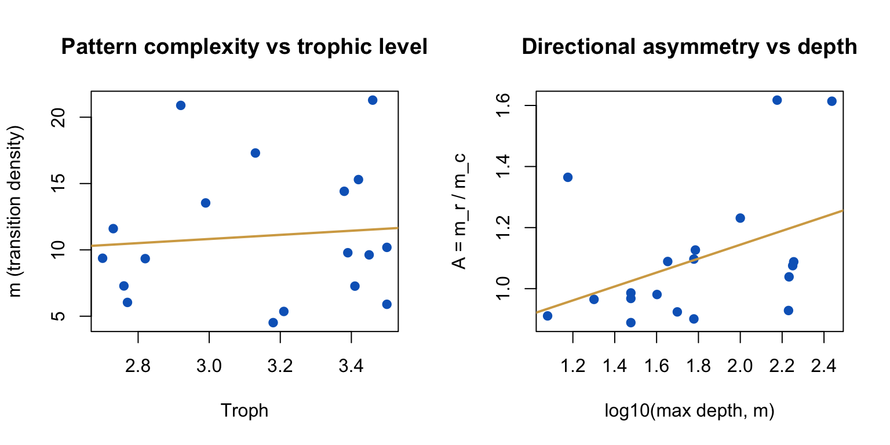
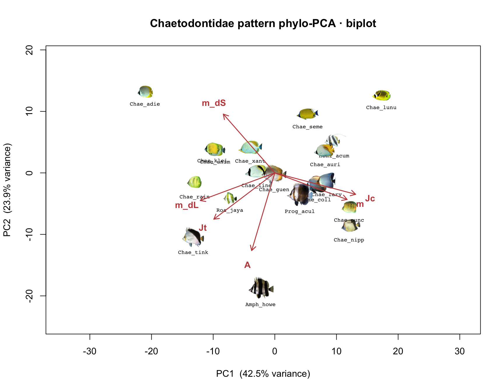
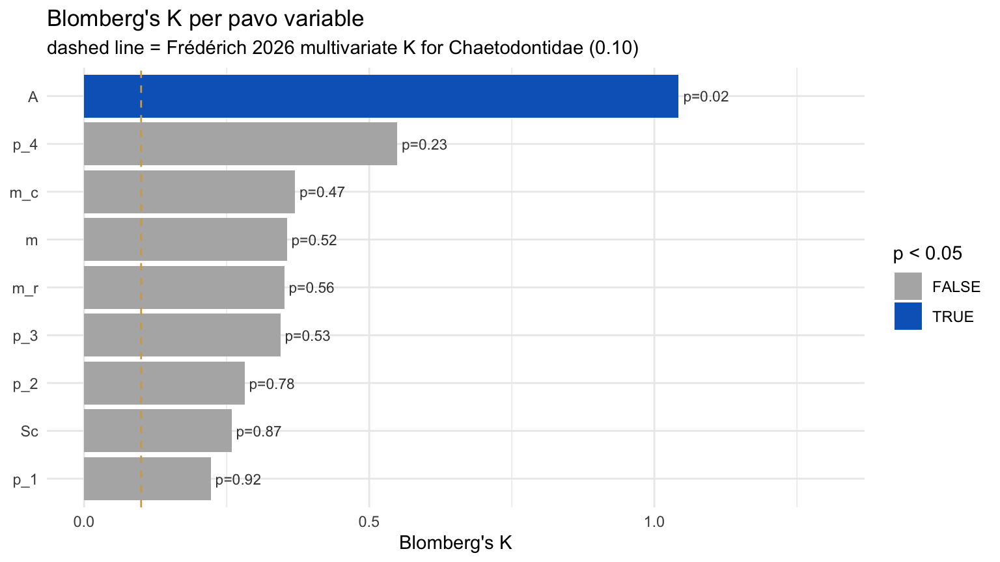
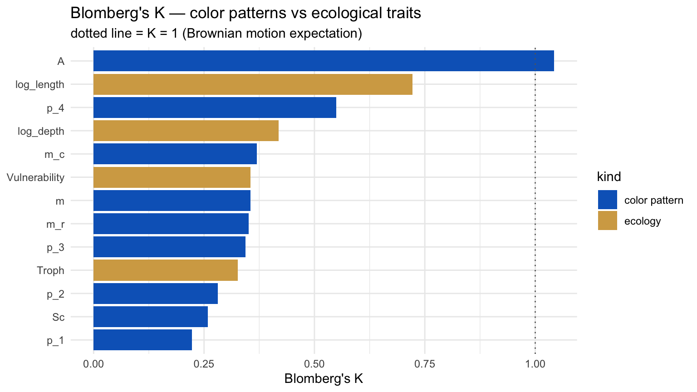
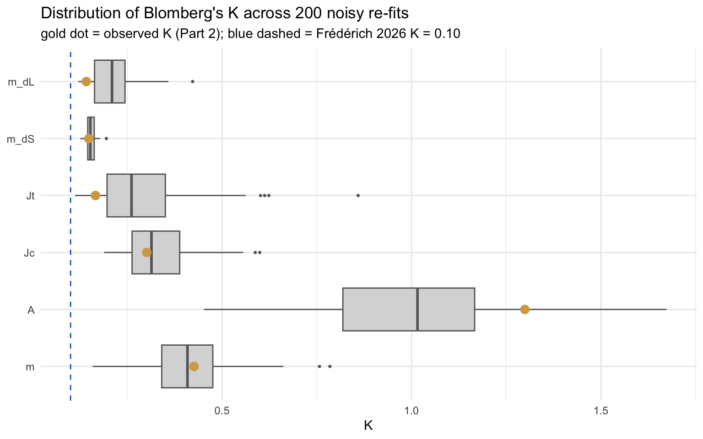

library(pavo)
library(ape)
library(ggplot2)
set.seed(2026) # makes classify() reproducible
bundle <- "chaetodontidae-mini-bundle" # your own family: e.g. "acanthuridae-mini-bundle"Demo 8 — Worksheet
EEB 187 · Wednesday May 20, 2026
Before you start
Working directory: Open this Quarto project (or set setwd()) so that the unzipped bundle folder chaetodontidae-mini-bundle/ sits directly inside your working dir. Every chunk below uses relative paths.
You can paste chunks one at a time into the RStudio Console. The companion R script scripts/walkthrough.R is the same chunks without prose, if you’d rather stay out of the rendered HTML.
The big question
Frédérich et al. 2026 told us surgeonfish color patterns have weak phylogenetic signal — color changes much faster than expected under Brownian motion, and convergent patterns crop up across distantly related lineages. The paper coded patterns as binary motif presence/absence. Today you’ll ask the same question with continuous pattern statistics from pavo, on your own family, and you’ll also ask whether your answer survives realistic measurement noise.
Three parts, building on each other:
- Part 1 (this section, ~25 min): Pretend the tree doesn’t exist. Just describe the standing diversity of pattern statistics across 20 species.
- Part 2 (~25 min): Bring the tree back. Do the same statistics with phylogenetic correction. Compare.
- Part 3 (~25 min): Stop pretending one image is the truth. Estimate measurement error from a 5-image stack of one species, then re-do Parts 1 & 2 200 times with that noise injected. Which conclusions survive?
Part 1 — Standing diversity (ignore the tree)
1.1 Setup
pavo does the color + pattern stats. ape handles the tree (we won’t use it until Part 2 — but we’ll load it now so we know it loads). set.seed() matters because pavo::classify() is k-means under the hood, and k-means is non-deterministic.
1.2 Inventory the bundle
tree <- read.tree(file.path(bundle, "chaetodontidae-mini-tree.tre"))
# The picker ships two manifests:
# picked_species.txt — directory names under images/ (Genus_species)
# picked_tip_labels.txt — matching tree-tip labels (e.g. Chaetodon_auriga2)
# The files may not be parallel, and a species may not have a tip on the tree —
# so we build the map by name-prefix matching and drop any species without a tip.
picked_species <- readLines(file.path(bundle, "picked_species.txt"))
picked_tips <- readLines(file.path(bundle, "picked_tip_labels.txt"))
match_tip <- function(sp, tips) {
hits <- grep(paste0("^", sp, "(?:[_0-9]|$)"), tips, value = TRUE, perl = TRUE)
if (length(hits) == 0) NA_character_ else hits[1]
}
species_to_tip <- vapply(picked_species, match_tip, character(1), tips = picked_tips)
unmatched <- picked_species[is.na(species_to_tip)]
if (length(unmatched)) {
message("Dropping ", length(unmatched), " species with no tree tip: ",
paste(unmatched, collapse = ", "))
}
species <- picked_species[!is.na(species_to_tip)]
species_to_tip <- species_to_tip[!is.na(species_to_tip)]
# Sanity: every kept species has an image dir + a matching tree tip
stopifnot(all(file.exists(file.path(bundle, "images", species))))
stopifnot(all(species_to_tip %in% tree$tip.label))
length(species)[1] 19head(species_to_tip) Amphichaetodon_howensis Chaetodon_adiergastos
"Amphichaetodon_howensis_M967" "Chaetodon_adiergastos_CHD01"
Chaetodon_auriga Chaetodon_collare
"Chaetodon_auriga2" "Chaetodon_collare_PW3054"
Chaetodon_guentheri Chaetodon_kleinii
"Chaetodon_guentheri_FMNH128374" "Chaetodon_kleinii_PW4831" # README names the error-species (the species with 5 images) — read it now
readLines(file.path(bundle, "README.txt"), n = 25) [1] "Demo 8 mini-bundle — chaetodontidae"
[2] "Generated: 2026-05-18T14:38:50"
[3] "Saved by: Admin"
[4] ""
[5] "Species selected in picker: 20"
[6] "Species actually shipped: 20"
[7] "Species SKIPPED (no image): 0"
[8] "Genera shipped: 5"
[9] "Error-species (5-image stack): Heniochus_acuminatus"
[10] ""
[11] "Image sources: families/chaetodontidae/analysis/{oriented,segmented}/<Species>/<file>.png"
[12] "Tree source: chronogram.tre (full tree; use picked_tip_labels.txt + ape::keep.tip() to prune)"
[13] ""
[14] "Worksheet expectations:"
[15] " bundle <- \"data/chaetodontidae\""
[16] " error_species <- \"Heniochus_acuminatus\""
[17] ""
[18] "Image-selection policy: this bundle ONLY ships images the admin"
[19] "explicitly picked (via 🖼️ Pick images on the mini-bundle picker)"
[20] "or starred (via ★ on a species review page). No alphabetical"
[21] "fallback — some images are low-quality and should not auto-ship."
[22] ""
[23] "Notes:"
[24] " Chaetodon auriga: shipped images[0]=Chaetodon_auriga_FishWise_006157F000009W000037.png; 2 other pick(s) recorded in YAML for future bootstrap."The README names one species — call it the error-species — that has a stack of 5 images instead of 1. We’ll parse the name out of the README in the next chunk so the rest of the worksheet doesn’t depend on a hard-coded string.
1.3 Run pavo on each species (the slow chunk)
We’ll use one image per species — images/<species>/exemplar.png — and for the error-species we’ll just grab img-1.png and treat it like the rest. For each image we classify the pixels into 4 pattern classes (k-means in CIELab space), then run adjacent to get pattern statistics from pixel-adjacency counts.
# Pull the error-species name out of the README so the worksheet stays valid
# across rebuilds of the bundle.
readme <- readLines(file.path(bundle, "README.txt"))
err_line <- grep("^Error-species", readme, value = TRUE)[1]
error_species <- if (is.na(err_line) || grepl("NONE", err_line)) NA_character_ else
trimws(sub("\\s*\\(.*", "",
sub(".*?:\\s*", "", err_line)))
cat("Error-species in this bundle:",
if (is.na(error_species)) "NONE" else error_species, "\n")Error-species in this bundle: Heniochus_acuminatus pick_image <- function(sp) {
if (!is.na(error_species) && sp == error_species) {
file.path(bundle, "images", sp, "img-1.png")
} else {
file.path(bundle, "images", sp, "exemplar.png")
}
}
run_one <- function(sp) {
img <- getimg(pick_image(sp))
classed <- classify(img, kcols = 4, plotnew = FALSE)
adj <- adjacent(classed, xpts = 50, xscale = 1)
adj$species <- sp
adj
}
# This takes ~30-60s for 20 species
results <- lapply(species, run_one)
adj_df <- do.call(rbind, results)
dim(adj_df)[1] 19 50colnames(adj_df) [1] "k" "N" "n_off" "p_1" "p_2" "p_3" "p_4"
[8] "q_1_1" "q_1_2" "q_2_2" "q_1_3" "q_2_3" "q_3_3" "q_1_4"
[15] "q_2_4" "q_3_4" "q_4_4" "t_1_2" "t_1_3" "t_2_3" "t_1_4"
[22] "t_2_4" "t_3_4" "m" "m_r" "m_c" "A" "Sc"
[29] "St" "Jc" "Jt" "B" "Rt" "Rab" "m_dS"
[36] "s_dS" "cv_dS" "m_dL" "s_dL" "cv_dL" "m_hue" "s_hue"
[43] "var_hue" "m_sat" "s_sat" "cv_sat" "m_lum" "s_lum" "cv_lum"
[50] "species"adjacent() returns a lot of columns. The ones you’ll use today are:
| Column | What it means |
|---|---|
p_1, p_2, p_3, p_4 |
Fraction of the image in each of the 4 color classes (sums to 1). |
Sc |
Simpson’s diversity of class proportions: 1 - sum(p_i^2). Higher = more even pattern. |
m |
Pattern “complexity”: probability that two adjacent pixels belong to different classes. 0 = solid color, 1 = maximally busy. |
m_r, m_c |
Same as m, but only for horizontal (m_r) or vertical (m_c) neighbors. The ratio tells you about pattern orientation. |
A |
Directional pattern asymmetry: m_r / m_c. A row (horizontal) transition is a color change you’d cross by scanning the image left-to-right; lots of these come from vertical bars on the fish. So A > 1 = bar-y. A < 1 = stripe-y (more vertical transitions, i.e. horizontal stripes). A = 1 = isotropic. |
1.4 Build the species × pattern-stat matrix
keep <- c("p_1", "p_2", "p_3", "p_4", "Sc", "m", "m_r", "m_c", "A")
traits <- adj_df[, c("species", keep)]
rownames(traits) <- traits$species
traits$species <- NULL
head(traits, 4) p_1 p_2 p_3 p_4 Sc
Amphichaetodon_howensis 0.4609091 0.2804545 0.22409091 0.03454545 2.919690
Chaetodon_adiergastos 0.6878571 0.1321429 0.08857143 0.09142857 1.973113
Chaetodon_auriga 0.2274286 0.1028571 0.31942857 0.35028571 3.483859
Chaetodon_collare 0.1265000 0.2230000 0.45650000 0.19400000 3.207601
m m_r m_c A
Amphichaetodon_howensis 7.282177 9.000000 5.564354 1.6174383
Chaetodon_adiergastos 5.898571 5.857143 5.940000 0.9860510
Chaetodon_auriga 17.301671 16.400000 18.203342 0.9009335
Chaetodon_collare 15.298490 15.025000 15.571980 0.9648741Nine pattern variables, 20 species. Save this matrix — Parts 2 and 3 will both read it.
1.5 Principal component analysis
PCA on a centered + scaled matrix because our variables are on very different units (proportions vs. probabilities vs. asymmetry).
pc <- prcomp(traits, scale. = TRUE)
summary(pc)Importance of components:
PC1 PC2 PC3 PC4 PC5 PC6 PC7
Standard deviation 2.044 1.2454 1.1842 0.9730 0.77572 0.56318 0.06968
Proportion of Variance 0.464 0.1723 0.1558 0.1052 0.06686 0.03524 0.00054
Cumulative Proportion 0.464 0.6363 0.7922 0.8974 0.96422 0.99946 1.00000
PC8 PC9
Standard deviation 2.648e-16 1.452e-16
Proportion of Variance 0.000e+00 0.000e+00
Cumulative Proportion 1.000e+00 1.000e+00Look at the Proportion of Variance row. If PC1 + PC2 together explain ≥ 60 %, two axes are a usable summary of the standing diversity.
plot(pc, type = "l", main = "Scree: how much variance per axis?")
biplot(pc, cex = 0.75, main = "Chaetodontidae pattern PCA (no tree)")
The arrows show which pavo variables drive each axis. Long arrows = high contribution. Arrows pointing the same direction = correlated variables (we’ll quantify that in 1.6).
pc_df <- as.data.frame(pc$x[, 1:2])
pc_df$species <- rownames(pc_df)
ggplot(pc_df, aes(PC1, PC2, label = species)) +
geom_point(size = 3, alpha = 0.7, color = "#0a66c2") +
geom_text(vjust = -0.8, size = 3) +
labs(title = "Where each species sits on the first two pattern axes",
x = sprintf("PC1 (%.1f%%)", summary(pc)$importance[2, 1] * 100),
y = sprintf("PC2 (%.1f%%)", summary(pc)$importance[2, 2] * 100)) +
theme_minimal()
Note
Read this plot: Each dot is one species in pattern-statistic space. Two species close together have similar pavo stats — they don’t have to be closely related (we haven’t told the plot anything about the tree). Two species far apart have different pattern statistics.
1.6 Bivariate relationships among pavo variables
Are any pavo variables strongly correlated? If yes, the PCA above is partly redundant — we have fewer truly independent pattern axes than we have variables.
cor_mat <- cor(traits)
round(cor_mat, 2) p_1 p_2 p_3 p_4 Sc m m_r m_c A
p_1 1.00 -0.47 -0.35 -0.26 -0.22 -0.20 -0.20 -0.19 0.00
p_2 -0.47 1.00 -0.32 -0.26 -0.14 -0.22 -0.21 -0.22 0.19
p_3 -0.35 -0.32 1.00 -0.32 0.31 0.43 0.46 0.40 0.04
p_4 -0.26 -0.26 -0.32 1.00 0.09 0.01 -0.02 0.04 -0.27
Sc -0.22 -0.14 0.31 0.09 1.00 0.76 0.75 0.75 -0.32
m -0.20 -0.22 0.43 0.01 0.76 1.00 0.99 0.99 -0.44
m_r -0.20 -0.21 0.46 -0.02 0.75 0.99 1.00 0.96 -0.31
m_c -0.19 -0.22 0.40 0.04 0.75 0.99 0.96 1.00 -0.54
A 0.00 0.19 0.04 -0.27 -0.32 -0.44 -0.31 -0.54 1.00Visualize with a quick pairs plot for the variables most likely to be linked:
pairs(traits[, c("Sc", "m", "m_r", "m_c", "A")],
lower.panel = panel.smooth, pch = 19, cex = 0.7)
And run a couple of named bivariate tests so the class can talk about them:
# fit_1: does directional pattern asymmetry track overall complexity?
fit_1 <- lm(A ~ m, data = traits)
summary(fit_1)$coefficients Estimate Std. Error t value Pr(>|t|)
(Intercept) 1.30237615 0.112859538 11.539797 1.825915e-09
m -0.01917481 0.009482316 -2.022165 5.918565e-02summary(fit_1)$r.squared[1] 0.1938983# fit_2: are horizontal and vertical transition densities the same?
fit_2 <- lm(m_c ~ m_r, data = traits)
summary(fit_2)$coefficients Estimate Std. Error t value Pr(>|t|)
(Intercept) -1.288251 0.88819245 -1.450419 1.651426e-01
m_r 1.080773 0.07409433 14.586441 4.820915e-11summary(fit_2)$r.squared[1] 0.9260111confint(fit_2)["m_r", ] # 95% CI on the slope — does it cover 1? 2.5 % 97.5 %
0.9244472 1.2370979 fit_2 is a sneaky one. summary(fit_2)’s default p-value tests the null slope = 0, which is almost never interesting here (we’d expect transitions in both directions to be correlated). The interesting question is slope = 1 — same density in both directions. Look at the confint() output: if 1 is inside the CI, your family is isotropic. If 1 is outside, patterns are systematically more bar-y or stripe-y.
1.7 What does this tell us so far?
You’ve described the standing diversity of pattern statistics in Chaetodontidae. The PCA, correlation matrix, and bivariate fits are doing the work of saying:
- how many pattern axes the family actually varies along (PCA),
- which pavo variables co-vary (correlation,
pairs()), and - whether any pair of pavo measurements has a meaningful relationship (
lm()).
What this analysis cannot tell you yet is whether any of these relationships are real biology or whether they’re artifacts of phylogeny — closely related species sharing pattern statistics for the same reason they share genes. That’s Part 2.
1.8 Ecological traits — pavo patterns vs how the fish lives
So far every variable has come out of pavo. The bundle also ships a small ecological-trait CSV harvested from FishBase, so we can ask whether pattern variation tracks how the fish lives, not just what its photo looks like.
eco <- read.csv(file.path(bundle, "species_traits.csv"))
head(eco) species Troph DepthRangeDeep Length Vulnerability
1 Amphichaetodon_howensis 2.76 150 18 16.68
2 Chaetodon_adiergastos 3.50 30 20 15.01
3 Chaetodon_auriga 3.13 60 23 11.53
4 Chaetodon_collare 3.42 20 18 14.21
5 Chaetodon_guentheri 2.82 40 18 14.21
6 Chaetodon_kleinii 3.18 61 15 12.01Four FishBase traits, all continuous, all on different scales:
| Column | Meaning | Units |
|---|---|---|
Troph |
Trophic level (food-web position): 2 ≈ herbivore, 4+ ≈ piscivore | dimensionless |
DepthRangeDeep |
Maximum reported depth | metres (log-transformed for analysis) |
Length |
Maximum reported body length | cm (log-transformed for analysis) |
Vulnerability |
FishBase intrinsic-vulnerability index (life-history risk) | 0–100 |
Join to the pavo trait matrix, dropping any species the bundle had a trait row for but no image:
combined <- merge(
data.frame(species = rownames(traits), traits),
eco, by = "species", all.x = TRUE
)
combined$log_depth <- log10(combined$DepthRangeDeep)
combined$log_length <- log10(combined$Length)
rownames(combined) <- combined$species
# Quick NA check — FishBase doesn't have Troph for every species
colSums(is.na(combined[, c("Troph", "log_depth", "log_length", "Vulnerability")])) Troph log_depth log_length Vulnerability
1 0 0 0 Two named bivariate tests with concrete biological questions:
# Do herbivores have less complex patterns than piscivores?
fit_eco_1 <- lm(m ~ Troph, data = combined)
summary(fit_eco_1)$coefficients Estimate Std. Error t value Pr(>|t|)
(Intercept) 6.147970 13.303475 0.4621326 0.650208
Troph 1.557546 4.203651 0.3705221 0.715853summary(fit_eco_1)$r.squared[1] 0.008507418# Does pattern directional asymmetry change with depth (light environment)?
fit_eco_2 <- lm(A ~ log_depth, data = combined)
summary(fit_eco_2)$coefficients Estimate Std. Error t value Pr(>|t|)
(Intercept) 0.6880279 0.2196156 3.132874 0.006061802
log_depth 0.2280106 0.1203455 1.894633 0.075280757summary(fit_eco_2)$r.squared[1] 0.1743418par(mfrow = c(1, 2))
plot(m ~ Troph, data = combined, pch = 19, col = "#0a66c2",
main = "Pattern complexity vs trophic level",
xlab = "Troph", ylab = "m (transition density)")
abline(fit_eco_1, col = "#d4a853", lwd = 2)
plot(A ~ log_depth, data = combined, pch = 19, col = "#0a66c2",
main = "Directional asymmetry vs depth",
xlab = "log10(max depth, m)", ylab = "A = m_r / m_c")
abline(fit_eco_2, col = "#d4a853", lwd = 2)
par(mfrow = c(1, 1))Finally, how well does the pavo PC1 — the headline axis of pattern variation — predict ecology?
pc_scores <- pc$x[combined$species, "PC1"]
ecology_cor <- sapply(c("Troph", "log_depth", "log_length", "Vulnerability"),
function(v) cor(pc_scores, combined[, v], use = "complete.obs"))
round(ecology_cor, 3) Troph log_depth log_length Vulnerability
0.098 -0.243 -0.130 -0.181 Correlations near 0 mean “PC1 has nothing to say about ecology — pattern axes are independent of how the fish lives.” Correlations near ±0.5 mean the headline pattern axis is doing real ecological work.
These are ahistorical correlations — they ignore phylogeny exactly like the rest of Part 1. Part 2’s §2.9 redoes them with PGLS so you can see how much shared ancestry was inflating (or hiding) the apparent ecology effect.
1.9 Save Part 1 outputs
Parts 2 and 3 will both want the trait matrix + the ecology join:
dir.create("results", showWarnings = FALSE)
saveRDS(traits, "results/part1-traits.rds")
saveRDS(pc, "results/part1-pca.rds")
saveRDS(cor_mat, "results/part1-cor.rds")
saveRDS(species_to_tip, "results/part1-species-to-tip.rds")
saveRDS(combined, "results/part1-combined.rds")Your Turn — your own family
Switch to your group’s bundle. On the FishView mini-bundle dashboard, hit Export to download <family>-mini-bundle.zip, drop it into the same working directory you used above, then:
unzip("<family>-mini-bundle.zip") # creates <family>-mini-bundle/
bundle <- "<family>-mini-bundle" # e.g. "acanthuridae-mini-bundle"Then re-run everything from 1.2 onward — the chunks only depend on bundle, so no other edits are needed.
You’ll want 20 species spanning ≥5 genera in your bundle. The lecturer has pre-selected those; if you see fewer than 20 species or fewer than 5 genera in your bundle, flag a TA.
Part 2 — Phylogenetic correction (bring the tree back)
In Part 1 we treated the 20 species as 20 independent observations. They’re not. Closely related species share trait values for the same reason they share genes — common ancestry. Every PCA loading and every lm() slope from Part 1 is potentially inflated (or deflated) by this non-independence.
Three corrections, in order:
- phyloPCA — PCA that uses the tree’s variance-covariance matrix to weight the data, so independent evolutionary change drives the axes (not just shared history).
- PGLS — generalized least squares where residuals are allowed to be correlated according to the tree. This is the bivariate-
lmanalog of phyloPCA. - Per-variable phylogenetic signal — Blomberg’s K and Pagel’s λ. Same idea as Demo 7, but applied to every pavo variable.
2.1 Match the trait matrix to the tree
library(phytools)
library(caper)
# These should already be in memory from Part 1; re-load if you've restarted R.
if (!exists("traits")) traits <- readRDS("results/part1-traits.rds")
if (!exists("species_to_tip")) species_to_tip <- readRDS("results/part1-species-to-tip.rds")
if (!exists("tree")) tree <- read.tree(file.path(bundle, "chaetodontidae-mini-tree.tre"))
# Re-key the trait matrix from directory names to tree-tip labels.
# (e.g. row "Chaetodon_auriga" -> "Chaetodon_auriga2"; the picker built this map.)
rownames(traits) <- species_to_tip[rownames(traits)]
# Keep only tips that have data; reorder data rows to tree-tip order
tree <- keep.tip(tree, rownames(traits))
traits <- traits[tree$tip.label, ]
stopifnot(all(rownames(traits) == tree$tip.label))
length(tree$tip.label)[1] 19stopifnot is the assertion-gate: if rows and tips are out of order, the rest of Part 2 silently gives nonsense answers. Better to crash here than to publish a wrong K.
2.2 Phylogenetic PCA
phytools::phyl.pca fits the same kind of PCA you ran in Part 1, but the centering and covariance step uses the tree’s expected variance-covariance under Brownian motion (optionally with λ-scaling).
Two of our 9 pavo variables are algebraically determined by the others:
Σ p_i = 1⇒p_4is fixed oncep_1..p_3are knownA = m_r / m_c⇒m_cis fixed oncem_randAare known
This is the same rank deficiency that was already in your Part 1 PCA — go back and look at the scree plot, the last two PCs had near-zero variance for exactly this reason. prcomp tolerated it and just gave you two “dead” axes you could ignore. phyl.pca cannot: it has to invert the trait covariance to do the phylogenetic correction, and a singular covariance can’t be inverted. So we drop the two algebraically redundant columns only for the phylo step — Part 1’s PCA is fine as-is (just don’t take PC8 and PC9 seriously).
traits_phy <- traits[, setdiff(colnames(traits), c("p_4", "m_c"))]
ncol(traits_phy)[1] 7phy_pc <- phyl.pca(tree, traits_phy, method = "lambda", mode = "corr")
summary(phy_pc)Importance of components:
PC1 PC2 PC3 PC4 PC5
Standard deviation 1.7976627 1.2295593 1.0435377 0.80934084 0.56517164
Proportion of Variance 0.4616559 0.2159737 0.1555673 0.09357609 0.04563128
Cumulative Proportion 0.4616559 0.6776296 0.8331969 0.92677300 0.97240428
PC6 PC7
Standard deviation 0.43800738 0.0363257556
Proportion of Variance 0.02740721 0.0001885086
Cumulative Proportion 0.99981149 1.0000000000Read the new Proportion of Variance row alongside Part 1’s. If the percentages shift, the tree was structuring the original axes.
biplot(phy_pc, main = "Chaetodontidae pattern phylo-PCA")
2.3 How did the loadings change?
The most direct comparison: each pavo variable’s contribution to PC1, with and without the tree.
ahist_pc <- readRDS("results/part1-pca.rds")
common_vars <- intersect(rownames(ahist_pc$rotation), rownames(phy_pc$L))
load_df <- data.frame(
variable = common_vars,
ahistorical_PC1 = ahist_pc$rotation[common_vars, "PC1"],
phyloPCA_PC1 = phy_pc$L[common_vars, 1]
)
print(round(load_df[, -1], 3)) ahistorical_PC1 phyloPCA_PC1
p_1 -0.129 0.286
p_2 -0.138 0.295
p_3 0.255 -0.578
Sc 0.404 -0.838
m 0.478 -0.961
m_r 0.467 -0.945
A -0.243 0.457ggplot(load_df, aes(ahistorical_PC1, phyloPCA_PC1, label = variable)) +
geom_abline(slope = 1, intercept = 0, linetype = "dashed", color = "grey50") +
geom_point(size = 3, color = "#d4a853") +
geom_text(vjust = -0.8, size = 3) +
labs(title = "PC1 loadings: no tree vs with tree",
x = "Loading on PC1 (ahistorical)",
y = "Loading on PC1 (phyloPCA)") +
theme_minimal() +
coord_equal()
Note
Read this plot. Variables on the dashed y = x line have identical loadings either way — phylogeny didn’t change them. Variables far from the line are loadings that were being driven (or masked) by shared ancestry.
2.4 PGLS — bivariate tests with phylogenetic correction
The same two lm() fits from Part 1, but now allowing the residuals to be correlated according to the tree’s Brownian-motion expectation. We use caper::pgls with lambda = "ML", which fits the optimal amount of phylogenetic correction.
Note: we dropped m_c and p_4 from the phyl.pca input above, but we keep all 9 variables in traits_df for pgls. pgls does bivariate fits — never inverts the full 9 × 9 covariance — so the rank deficiency that broke phyl.pca doesn’t matter here. m_c reappearing in pgls_2 is intentional.
traits_df <- data.frame(species = rownames(traits), traits)
cd <- comparative.data(phy = tree, data = traits_df,
names.col = "species", vcv = TRUE)
pgls_1 <- pgls(A ~ m, data = cd, lambda = "ML")
pgls_2 <- pgls(m_c ~ m_r, data = cd, lambda = "ML")
summary(pgls_1)
Call:
pgls(formula = A ~ m, data = cd, lambda = "ML")
Residuals:
Min 1Q Median 3Q Max
-0.052457 -0.025837 -0.011330 0.004365 0.065454
Branch length transformations:
kappa [Fix] : 1.000
lambda [ ML] : 0.975
lower bound : 0.000, p = 0.021505
upper bound : 1.000, p = 0.8988
95.0% CI : (0.193, NA)
delta [Fix] : 1.000
Coefficients:
Estimate Std. Error t value Pr(>|t|)
(Intercept) 1.3624846 0.1268589 10.7402 5.383e-09 ***
m -0.0143414 0.0064272 -2.2313 0.03941 *
---
Signif. codes: 0 '***' 0.001 '**' 0.01 '*' 0.05 '.' 0.1 ' ' 1
Residual standard error: 0.0369 on 17 degrees of freedom
Multiple R-squared: 0.2265, Adjusted R-squared: 0.181
F-statistic: 4.979 on 1 and 17 DF, p-value: 0.03941 summary(pgls_2)
Call:
pgls(formula = m_c ~ m_r, data = cd, lambda = "ML")
Residuals:
Min 1Q Median 3Q Max
-0.3747 -0.1304 0.1127 0.1795 0.3470
Branch length transformations:
kappa [Fix] : 1.000
lambda [ ML] : 0.741
lower bound : 0.000, p = 0.034136
upper bound : 1.000, p = 0.31064
95.0% CI : (0.051, NA)
delta [Fix] : 1.000
Coefficients:
Estimate Std. Error t value Pr(>|t|)
(Intercept) -2.077211 0.907493 -2.289 0.03515 *
m_r 1.084280 0.058709 18.469 1.096e-12 ***
---
Signif. codes: 0 '***' 0.001 '**' 0.01 '*' 0.05 '.' 0.1 ' ' 1
Residual standard error: 0.2406 on 17 degrees of freedom
Multiple R-squared: 0.9525, Adjusted R-squared: 0.9497
F-statistic: 341.1 on 1 and 17 DF, p-value: 1.095e-12 Side-by-side with Part 1’s lm():
compare <- data.frame(
fit = c("A ~ m", "m_c ~ m_r"),
lm_slope = c(coef(fit_1)[2], coef(fit_2)[2]),
lm_p = c(summary(fit_1)$coefficients[2, 4],
summary(fit_2)$coefficients[2, 4]),
pgls_slope = c(coef(pgls_1)[2], coef(pgls_2)[2]),
pgls_p = c(summary(pgls_1)$coefficients[2, 4],
summary(pgls_2)$coefficients[2, 4]),
pgls_lambda = c(summary(pgls_1)$param["lambda"],
summary(pgls_2)$param["lambda"])
)
round(compare[, -1], 3) lm_slope lm_p pgls_slope pgls_p pgls_lambda
m -0.019 0.059 -0.014 0.039 0.975
m_r 1.081 0.000 1.084 0.000 0.741Pay attention to two things:
- Did the slope change? If yes, the ancestral covariance was pushing your
lm()estimate around. - Did the p-value change? A relationship that’s significant under
lm()but not under PGLS was being inflated by phylogenetic non-independence. The reverse — significant under PGLS but notlm()— happens when phylogeny was masking a real signal.
The pgls_lambda column tells you how much phylogenetic correction the fit actually wanted. λ ≈ 0 means the residuals look independent, λ ≈ 1 means Brownian-motion-strength correlation.
2.5 Per-variable phylogenetic signal (K and λ)
Run Blomberg’s K and Pagel’s λ on each pavo variable separately, with permutation tests:
signal <- t(sapply(colnames(traits), function(v) {
x <- setNames(traits[, v], rownames(traits))
k_res <- phylosig(tree, x, method = "K", test = TRUE, nsim = 999)
l_res <- phylosig(tree, x, method = "lambda", test = TRUE)
c(K = k_res$K, K_p = k_res$P,
lambda = as.numeric(l_res$lambda), lambda_p = l_res$P)
}))
signal <- as.data.frame(signal)
round(signal, 3) K K_p lambda lambda_p
p_1 0.222 0.919 0.000 1.000
p_2 0.282 0.780 0.000 1.000
p_3 0.344 0.532 0.000 1.000
p_4 0.549 0.232 0.000 1.000
Sc 0.259 0.875 0.000 1.000
m 0.356 0.521 0.000 1.000
m_r 0.351 0.558 0.000 1.000
m_c 0.370 0.473 0.000 1.000
A 1.043 0.016 0.854 0.027K < 1 means less signal than Brownian — relatives look more different than you’d expect under random drift. K > 1 means the opposite. K = 1 is the BM expectation. The p-value tests K = 0 (no signal at all).
2.6 Compare to Frédérich 2026
Frédérich et al. report multivariate Blomberg’s K for Chaetodontidae = 0.10 (their Table 1). That’s a single multivariate K across all 30 binary motif columns. Your per-pavo-variable Ks are a different estimand — they ask the question variable-by-variable on continuous pattern statistics. They are not numerically comparable to the paper’s 0.10. We plot the 0.10 line below as a landmark so you can see the order of magnitude the paper is reporting, not as a target your bars should hit.
signal$variable <- rownames(signal)
ggplot(signal, aes(reorder(variable, K), K, fill = K_p < 0.05)) +
geom_col() +
geom_hline(yintercept = 0.10, linetype = "dashed", color = "#d4a853") +
geom_text(aes(label = sprintf("p=%.2f", K_p)),
hjust = -0.1, size = 3, color = "grey25") +
scale_fill_manual(values = c(`TRUE` = "#0a66c2", `FALSE` = "grey70"),
name = "p < 0.05") +
coord_flip(ylim = c(0, max(signal$K) * 1.25)) +
labs(title = "Blomberg's K per pavo variable",
subtitle = "dashed line = Frédérich 2026 multivariate K for Chaetodontidae (0.10)",
x = NULL, y = "Blomberg's K") +
theme_minimal()
What’s worth saying here is directional, not numerical: do most of your variables sit at K < 1 (weaker than Brownian-motion expectation, consistent with Frédérich’s fast-evolution story), or do some sit well above 1 (relatives more similar than BM predicts)? That qualitative comparison is meaningful; matching 0.10 exactly is not.
2.7 What does this tell us?
You’ve now made three different phylogenetic corrections to Part 1’s analysis:
- phyloPCA loadings told you whether the axes you identified ahistorically were being driven by shared ancestry.
- PGLS slopes and p-values told you whether your bivariate
lm()claims survive accounting for non-independence. - K and λ per variable told you which specific pavo measurements are phylogenetically structured at all.
Hold onto whichever pattern is most striking — Part 3 will ask whether it’s robust to measurement noise, not just to phylogenetic correction.
2.8 Ecology after phylogenetic correction
Part 1 §1.8 found ahistorical correlations between pavo PC1 and ecology variables (trophic level, depth, body size, vulnerability). Now repeat the named bivariate tests with phylogenetic correction, and add per-trait K/λ for the ecology variables themselves.
if (!exists("combined")) combined <- readRDS("results/part1-combined.rds")
# Re-key combined to tree-tip labels and order to match tree
combined$species <- species_to_tip[combined$species]
combined <- combined[match(tree$tip.label, combined$species), ]
stopifnot(all(combined$species == tree$tip.label))
cd_eco <- comparative.data(phy = tree, data = combined,
names.col = "species", vcv = TRUE, na.omit = FALSE)
pgls_eco_1 <- pgls(m ~ Troph, data = cd_eco, lambda = "ML")
pgls_eco_2 <- pgls(A ~ log_depth, data = cd_eco, lambda = "ML")
summary(pgls_eco_1)
Call:
pgls(formula = m ~ Troph, data = cd_eco, lambda = "ML")
Residuals:
Min 1Q Median 3Q Max
-1.0043 -0.6001 -0.1991 0.4478 1.5551
Branch length transformations:
kappa [Fix] : 1.000
lambda [ ML] : 0.000
lower bound : 0.000, p = 1
upper bound : 1.000, p = 0.0012155
95.0% CI : (NA, 0.704)
delta [Fix] : 1.000
Coefficients:
Estimate Std. Error t value Pr(>|t|)
(Intercept) 6.1480 13.3035 0.4621 0.6502
Troph 1.5575 4.2037 0.3705 0.7159
Residual standard error: 0.7982 on 16 degrees of freedom
(1 observation deleted due to missingness)
Multiple R-squared: 0.008507, Adjusted R-squared: -0.05346
F-statistic: 0.1373 on 1 and 16 DF, p-value: 0.7159 summary(pgls_eco_2)
Call:
pgls(formula = A ~ log_depth, data = cd_eco, lambda = "ML")
Residuals:
Min 1Q Median 3Q Max
-0.040608 -0.026126 -0.009913 -0.000729 0.075415
Branch length transformations:
kappa [Fix] : 1.000
lambda [ ML] : 0.773
lower bound : 0.000, p = 0.12743
upper bound : 1.000, p = 0.23511
95.0% CI : (NA, NA)
delta [Fix] : 1.000
Coefficients:
Estimate Std. Error t value Pr(>|t|)
(Intercept) 0.99232 0.23213 4.2749 0.0005119 ***
log_depth 0.11235 0.10815 1.0389 0.3134230
---
Signif. codes: 0 '***' 0.001 '**' 0.01 '*' 0.05 '.' 0.1 ' ' 1
Residual standard error: 0.03521 on 17 degrees of freedom
Multiple R-squared: 0.05969, Adjusted R-squared: 0.004382
F-statistic: 1.079 on 1 and 17 DF, p-value: 0.3134 Compare to the lm() versions from §1.8:
data.frame(
fit = c("m ~ Troph", "A ~ log_depth"),
lm_slope = c(coef(fit_eco_1)[2], coef(fit_eco_2)[2]),
lm_p = c(summary(fit_eco_1)$coefficients[2, 4],
summary(fit_eco_2)$coefficients[2, 4]),
pgls_slope = c(coef(pgls_eco_1)[2], coef(pgls_eco_2)[2]),
pgls_p = c(summary(pgls_eco_1)$coefficients[2, 4],
summary(pgls_eco_2)$coefficients[2, 4]),
pgls_lambda = c(summary(pgls_eco_1)$param["lambda"],
summary(pgls_eco_2)$param["lambda"])
) |> (\(x) { x[, -1] <- round(x[, -1], 3); x })() fit lm_slope lm_p pgls_slope pgls_p pgls_lambda
Troph m ~ Troph 1.558 0.716 1.558 0.716 0.000
log_depth A ~ log_depth 0.228 0.075 0.112 0.313 0.773Now ask the converse question: how phylogenetically structured are the ecology variables themselves? If ecology has high K and color patterns have low K (as Frédérich found), shared ancestry is doing very different work for the two kinds of trait.
eco_vars <- c("Troph", "log_depth", "log_length", "Vulnerability")
signal_eco <- t(sapply(eco_vars, function(v) {
x <- setNames(combined[, v], combined$species)
x <- x[!is.na(x)]
k_res <- phytools::phylosig(ape::keep.tip(tree, names(x)), x,
method = "K", test = TRUE, nsim = 999)
l_res <- phytools::phylosig(ape::keep.tip(tree, names(x)), x,
method = "lambda", test = TRUE)
c(K = k_res$K, K_p = k_res$P,
lambda = as.numeric(l_res$lambda), lambda_p = l_res$P)
}))
signal_eco <- as.data.frame(signal_eco)
round(signal_eco, 3) K K_p lambda lambda_p
Troph 0.326 0.622 0.000 1.000
log_depth 0.419 0.310 0.272 0.662
log_length 0.722 0.022 1.064 0.004
Vulnerability 0.356 0.545 0.000 1.000Visualize color-pattern signal next to ecology signal:
signal$kind <- "color pattern"
signal$variable <- rownames(signal)
signal_eco$kind <- "ecology"
signal_eco$variable <- rownames(signal_eco)
side_by_side <- rbind(
signal[, c("variable", "K", "K_p", "kind")],
signal_eco[, c("variable", "K", "K_p", "kind")]
)
ggplot(side_by_side, aes(reorder(variable, K), K, fill = kind)) +
geom_col() +
geom_hline(yintercept = 1, linetype = "dotted", color = "grey40") +
scale_fill_manual(values = c(`color pattern` = "#0a66c2",
`ecology` = "#d4a853")) +
coord_flip() +
labs(title = "Blomberg's K — color patterns vs ecological traits",
subtitle = "dotted line = K = 1 (Brownian motion expectation)",
x = NULL, y = "Blomberg's K") +
theme_minimal()
The big-picture comparison this plot enables: if ecology bars cluster around K ≈ 1 while color-pattern bars cluster well below, you’ve shown empirically what Frédérich 2026 argues conceptually — fish color patterns evolve faster than the ecological traits that supposedly drive them, so color and niche are decoupled enough that phylogenetic conservatism in one doesn’t imply conservatism in the other.
2.9 Save Part 2 outputs
saveRDS(phy_pc, "results/part2-phylopca.rds")
saveRDS(signal, "results/part2-signal.rds")
saveRDS(list(pgls_1 = pgls_1, pgls_2 = pgls_2,
pgls_eco_1 = pgls_eco_1, pgls_eco_2 = pgls_eco_2),
"results/part2-pgls.rds")
saveRDS(compare, "results/part2-compare-lm-pgls.rds")
saveRDS(signal_eco, "results/part2-signal-ecology.rds")Your Turn — your own family
Same drill as Part 1: switch bundle to your group’s mini-bundle and re-run 2.1–2.8. You’ll get a per-family K plot directly comparable to Frédérich’s published value for that family (Acanthuridae 0.11, Pomacanthidae 0.05, Lutjanidae 0.22, Mullidae 0.08, Pomacentridae 0.06 — Chaetodontidae 0.10 is the one we already did).
Part 3 — Measurement-error propagation
Up to here we’ve been pretending the observed pavo value for each species is the truth. It isn’t. If you photograph the same fish from a slightly different angle, the pavo statistics change — sometimes a little, sometimes a lot. Part 3 asks: how much of what we just claimed in Part 2 survives when we admit those numbers were estimates?
The recipe is straightforward to describe and quite striking when you run it:
- Estimate the noise from the 5-image stack of one species (the error-species).
- Assume that noise applies to every tip — i.e. every species was measured with the same SD.
- Monte Carlo: 200 times, perturb every tip’s pavo values by Gaussian noise with those SDs, re-run Part 1 (PCA) and Part 2 (phyloPCA, PGLS, K, λ).
- Look at the distribution of answers, not just the point estimates.
3.1 Run pavo on the 5-image stack
If you took a break and restarted R between Part 2 and Part 3, reload the bits Part 3 needs:
# Reload Parts 1 + 2 output if you've restarted R since then.
if (!exists("traits")) traits <- readRDS("results/part1-traits.rds")
if (!exists("species_to_tip")) species_to_tip <- readRDS("results/part1-species-to-tip.rds")
if (!exists("signal")) signal <- readRDS("results/part2-signal.rds")
if (!exists("pgls_1") || !exists("pgls_2")) {
pgls_list <- readRDS("results/part2-pgls.rds")
pgls_1 <- pgls_list$pgls_1; pgls_2 <- pgls_list$pgls_2
}
if (!exists("tree")) {
tree <- ape::read.tree(file.path(bundle, "chaetodontidae-mini-tree.tre"))
rownames(traits) <- species_to_tip[rownames(traits)]
tree <- ape::keep.tip(tree, rownames(traits))
traits <- traits[tree$tip.label, ]
}
# Parse error-species name out of the bundle's README (set in Part 1 §1.3,
# re-parsed here so Part 3 stands on its own).
readme <- readLines(file.path(bundle, "README.txt"))
err_line <- grep("^Error-species", readme, value = TRUE)[1]
error_species <- if (is.na(err_line) || grepl("NONE", err_line)) NA_character_ else
trimws(sub("\\s*\\(.*", "", sub(".*?:\\s*", "", err_line)))
cat("Error-species in this bundle:",
if (is.na(error_species)) "NONE" else error_species, "\n")Error-species in this bundle: Heniochus_acuminatus stopifnot(!is.na(error_species)) # Part 3 needs an error-speciesNow run pavo on its 5-image stack:
source("scripts/measurement-error.R")
err <- pavo_error_stats(bundle, error_species, n_images = 5)
err$per_image p_1 p_2 p_3 p_4 Sc m m_r
img-1 0.2400000 0.11736842 0.2100000 0.43263158 3.304197 9.624442 9.973684
img-2 0.1014286 0.09214286 0.5414286 0.26500000 2.616787 17.158571 16.857143
img-3 0.1248276 0.23517241 0.1351724 0.50482759 2.906888 6.586742 7.155172
img-4 0.2843243 0.27783784 0.3340541 0.10378378 3.566367 9.388747 9.405405
img-5 0.2763158 0.36157895 0.2805263 0.08157895 3.419506 15.768848 15.842105
m_c A
img-1 9.275200 1.0753066
img-2 17.460000 0.9654721
img-3 6.018311 1.1889004
img-4 9.372089 1.0035549
img-5 15.695590 1.0093348Five rows, nine columns: one row per image, one column per pavo variable.
data.frame(mean = round(err$mean, 4),
sd = round(err$sd, 4),
cv = round(err$sd / abs(err$mean), 3)) mean sd cv
p_1 0.2054 0.0863 0.420
p_2 0.2168 0.1123 0.518
p_3 0.3002 0.1542 0.514
p_4 0.2776 0.1900 0.685
Sc 3.1627 0.3913 0.124
m 11.7055 4.5317 0.387
m_r 11.8467 4.2587 0.359
m_c 11.5642 4.8122 0.416
A 1.0485 0.0879 0.084The cv (coefficient of variation = SD / mean) is the most readable number. A cv near 0 means “five images give nearly identical pavo values”; a cv near 0.5 means “swapping the photo changes this pavo statistic by ~50 %”.
3.2 Visualize within-species noise
long <- as.data.frame(err$per_image)
long$image <- rownames(long)
long <- tidyr::pivot_longer(long, cols = -image,
names_to = "variable", values_to = "value")
ggplot(long, aes(variable, value)) +
geom_jitter(width = 0.12, height = 0, alpha = 0.7, color = "#d4a853", size = 2.5) +
stat_summary(fun = mean, geom = "crossbar", width = 0.45, color = "#181b2b") +
labs(title = sprintf("Within-species variation: %s × 5 images", error_species),
subtitle = "horizontal bar = mean; dots = one per image",
x = NULL, y = "pavo value") +
theme_minimal() +
theme(axis.text.x = element_text(angle = 30, hjust = 1))
Variables with tight clusters are robust. Variables with wide spread are not — and those are the variables whose K and PGLS results from Part 2 are most likely to wobble.
3.3 The simplifying assumption
Warning
We’re about to treat the SDs from one species as the SDs for every species. That’s a known-strong assumption — within-species variance might be larger for some species (heterogeneous within-species color) and smaller for others. We’re making the assumption because (a) we can only afford to photograph one species five times in this demo, and (b) it lets the class see uncertainty propagation as one tunable knob. In a research paper you’d want to estimate per-species SDs — and then your noise vector would itself be a matrix.
3.4 Monte Carlo: re-run Parts 1 & 2 under noise
source("scripts/error-aware-analyses.R")
# Default n_iter = 100 (~1.5-2 minutes on a recent laptop) is enough to see
# the shape of the distributions. Bump to 200 for tighter CIs if class time
# allows (~3-5 minutes).
mc <- mc_redo_analyses(traits, tree, err$sd, n_iter = 100, seed = 2026)mc holds:
mc$pc1_loadings— 200 × 9 matrix of PC1 loadings (one row per iteration)mc$Kandmc$lambda— 200 × 9 matrix of per-variable signal statsmc$pgls_slopes— 200 × 2 matrix of the two named PGLS slopesmc$summaries— 95 % CIs (2.5 %, 50 %, 97.5 % quantiles) for each of the above
3.5 Blomberg’s K — observed vs noisy
K_long <- tidyr::pivot_longer(as.data.frame(mc$K),
cols = everything(),
names_to = "variable", values_to = "K")
obs <- signal[, c("variable", "K")]
obs$variable <- factor(obs$variable, levels = colnames(mc$K))
K_long$variable <- factor(K_long$variable, levels = colnames(mc$K))
ggplot(K_long, aes(variable, K)) +
geom_boxplot(fill = "grey85", color = "grey40", outlier.size = 0.6) +
geom_point(data = obs, aes(variable, K),
color = "#d4a853", size = 3) +
geom_hline(yintercept = 0.10, linetype = "dashed", color = "#0a66c2") +
coord_flip() +
labs(title = "Distribution of Blomberg's K across 200 noisy re-fits",
subtitle = "gold dot = observed K (Part 2); blue dashed = Frédérich 2026 K = 0.10",
x = NULL, y = "K") +
theme_minimal()
Read this plot variable-by-variable:
- Tight, low boxplots near 0: your “no signal” conclusion is robust.
- Tight, high boxplots above 0.10: your “signal exists” conclusion is robust.
- Boxplots that straddle 0: you cannot distinguish your observed K from zero once you admit the measurements are noisy.
- Observed K (gold) falls outside the boxplot: this is the diagnostic that your Part 2 point estimate is fragile — sampling a different image would have given you a meaningfully different K.
3.6 PGLS slopes — observed vs noisy
slope_ci <- mc$summaries$slopes_ci
slope_tbl <- data.frame(
fit = c("A ~ m", "m_c ~ m_r"),
pgls_obs = c(coef(pgls_1)[2], coef(pgls_2)[2]),
ci_low = slope_ci["2.5%", ],
ci_median = slope_ci["50%", ],
ci_high = slope_ci["97.5%", ]
)
slope_tbl[, -1] <- round(slope_tbl[, -1], 3)
slope_tbl fit pgls_obs ci_low ci_median ci_high
m A ~ m -0.014 -0.017 -0.008 0.003
m_r m_c ~ m_r 1.084 0.279 0.637 1.083The diagnostic to apply: does zero lie inside the MC 95 % CI? If zero is outside the CI, your Part 2 slope survives measurement error — the relationship is real even when you admit the tip values were noisy. If zero is inside the CI, the relationship is fragile: noise of the size you observed in one species is enough to make it indistinguishable from no relationship at all. (The observed point estimate sits inside the CI by construction; that’s not the test.)
3.7 What does this tell us?
Three takeaway sentences you should be able to write for your own family:
- “With perfect measurements, our pavo data agree / disagree with Frédérich 2026’s headline of weak phylogenetic signal in reef-fish color patterns.”
- “Once we admit measurement error of the size we observed in one species, the conclusions about VARIABLE X / Y / Z survive, but the conclusions about VARIABLE A / B / C become indistinguishable from noise.”
- “Therefore the strongest claim we can defend for our family is: …”
That third sentence is what you’ll turn in.
3.8 Save Part 3 outputs
saveRDS(err, "results/part3-error-stats.rds")
saveRDS(mc, "results/part3-mc.rds")Your Turn — your own family
Same drill: set bundle <- "<family>-mini-bundle" (e.g. "acanthuridae-mini-bundle"), drop the unzipped folder next to it, and re-run from 3.1 onward. The error-species is parsed automatically from your bundle’s README.txt, so no other edits needed.
The Monte Carlo step is the slowest — budget ~5 minutes if you bump n_iter to 200. For a quick rerun while exploring, n_iter = 50 is enough to see the broad shape of the distributions.